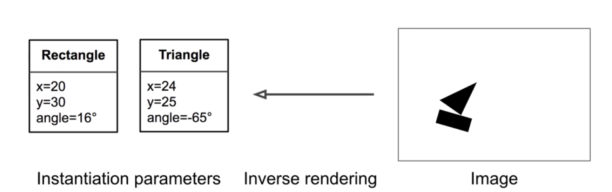
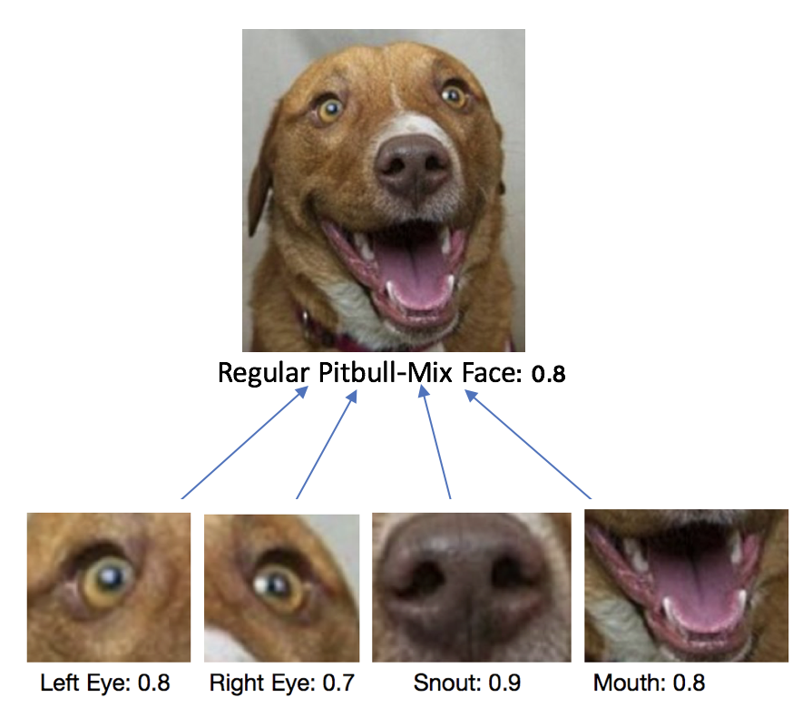
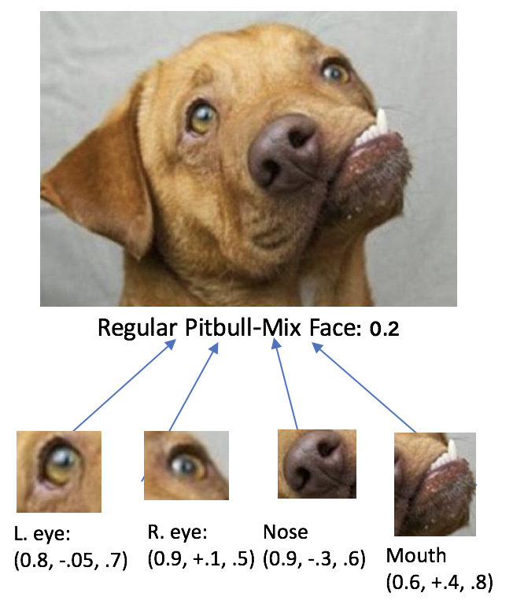
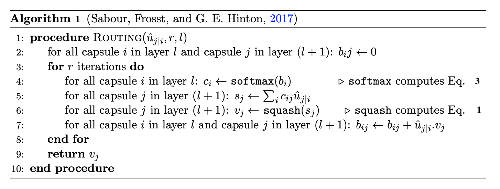
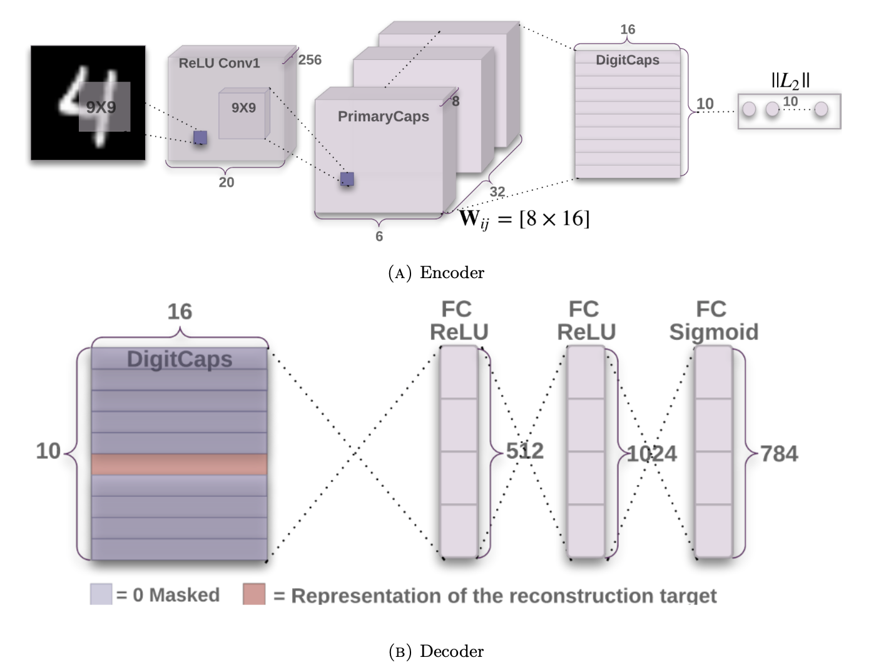

CapsNets, a step-up from CNNs?
5/15/2022Convolutional Neural Networks (CNNs) have been the state-of-the-art when it comes to computer vision tasks. They are in constant improvement and novel architectures are always coming up that are more accurate while being more effcient and faster. However, according to Geoffery Hinton, the routing mechanism between convolutional layers in CNNs, the pooling mechanism, is the problem as it causes loss of valuable information by discarding pixels with low activation or averaging the values of pixels within a window of predefined dimensions (Sabour, Frosst, and G. E. Hinton, 2017). Hinton et al. proposed a new architecture and named it “Capsule Network” and a new routing mechanism, Dynamic Routing between Capsules, which will be discussed in this blog post.
What is a Capsule Network?
The intuition behind a capsule network is to have a group of neurons that can capture properties of existing entities in an image and performing inverse graphics on them, as shown in Figure 1. In Computer Graphics, a program typically starts with the instantiation parameters of an object (position, size, orientation, deformation, velocity, hue, texture), and uses those to draw the object. Capsule networks (CapsNets) are able to invert this process by learning from objects in input images their instantiation parameters. CapsNets can achieve equivariance, for example, if an entity is present in an image and is rotated by 40 deg, then a capsule network is able to recognise the original entity and that it is rotated. On the other hand, CNNs have a crude approach at equivariance by recognising that the detected entity matches a variant that is transformed (rotated by 40deg). CNNs learn from thousands of original and transformed examples of an entity while on the other hand, CapsNets can learn efficient representations of objects from far fewer examples and simpler networks.

Another strength of CapsNets is the dynamic routing algorithm that acts as a disentanglement technique to ”explain-away” part-whole relationships. Lower-layer capsules route by agreement to higher-layer capsules forming parse-tree structure, i.e., the entity in a lower-layer capsule should be part of bigger picture in the higher-layer capsule and should have a similar orientation. An example of a parse tree structure can be seen in Figure 2.

Dynamic routing in capsule networks can be similar to the purpose of self-attention in transformers in trying to understand part-whole relationships (Vaswani, Shazeer, Parmar, et al., 2017). Transformers employ attention maps to decide which parts of the input to attend to and how information from these different parts contribute to updating the representations. Attention maps in Transformers can be mapped to routing coefficients in CapsNets, the difference is that in Transformers the attention is computed top-down while in CapsNets the routing coefficients are computed bottom-up (Samira Abnar, 2019).
Dynamic routing algorithm can also identify when one entity in a lower-layer capsule does not match the orientation of the higher-layer capsule and that it is slightly off, as shown in Figure 3. Here, a CNN will detected all entities in the face although some of them do not match the target orientation of the face, nonetheless, the CNN will predict the presence of a pitbull face with a high confidence. CapsNet on the other hand will recognise that the parts. although detected correctly, do not contribute to a whole in a correct way, thus will output a lower activation for a pitbull face capsule.

It is this functionality of dynamic routing that gives CapsNets the advantage of being able to explain the objects they detect in an image by disentangling them, and this was actually achieved in the paper by (Sabour, Frosst, and G. E. Hinton, 2017) on MultiMNIST, where CapsNet was successful in disentangling overlapping digits
Capsule Network Architecture
Capsule networks consist of two components: an encoder and a decoder. The encoder component is responsible for the network predictions. The first layer in the network is a regular convolutional layer as in any CNN, it takes in images as input and outputs feature maps. In the architecture prposed by (Sabour, Frosst, and G. E. Hinton, 2017), the convolutional layer produces 256 feature maps after convolving a filter of size 9x9 with a stride of 1 across the input which is 28x28 a single-channel image. The output of the first convolutional layer is 256 feature maps of size 20x20 that is followed by a second convolution where the output of 256 6x6 feature maps is reshaped into 32 blocks of size 6x6 and depth of 8, these blocks contain groups of neurons called capsules and are the basic building block for Capsule Networks. The idea behind having these capsules is to learn and represent properties that correspond to a particular entity in an image and learn part-whole relationships as will be described in the following paragraph on how information gets routed from one layer to the next. The output of each capsule is an 8D vector with the encoded properties learnt about an entity, this is comparable to the output of neurons in CNNs which is a single scalar for each neuron. The probability of the existence of an entity in Capsule Networks is represented by the length of the output vector. A squashing function (Eq.1) is used on each capsule to introduce non-linearity by driving the vector length value closer to 0 for short vectors and closer to 1 for long vectors. Squashing is comparable to non-linear activation functions in CNNs that activate only neu- rons with outputs passing certain threshold. The first layer with capsules is called “Primary Capsules” layer.
$$ v_j = \frac{||s_j||^2}{1+||s_j||^2} \frac{s_j}{||s_j||} \tag{Eq. 1} $$
The second capsule layer is the “Digit Capsules”, as the authors used digit images—the MNIST dataset (LeCun and Cortes, 2010)—as input to classify digits, but the second layer can more generally be named as Class Capsules. This layer is responsible for the prediction and it is expected to have a number of capsules equalling that of the classes in the dataset. Routing between Primary Capsules and Digit Capsules is what Hinton named “Dynamic Routing” where lower layer capsules choose which higher layer capsules to send their information to. The algorithm for the dynamic routing algorithm is shown in Algorithm 1 below. Mainly, lower layer capsules try to predict the output of every higher layer capsule by using a transformation matrix \(W_{ij}\) consisting of weights that are initialised randomly at the start of the training process and are updated through backpropagation. By multiplying the weights in the transformation matrix with the lower layer capsule output, we get the predicted output of higher layer capsules (Eq. 2). The predicted output is used to calculate routing coefficients cij which are basically how likely a lower layer capsule will connect with a higher layer one. Routing coefficients of a certain layer should sum up to 1, hence \(c_{ij}\) is calculated as a softmax of log prior probabilities \(b_{ij}\) (Eq. 3). Log priors \(b_{ij}\) are initialised to zeros and are learnt over several iterations discriminatively along with other weights in the network and is dependent on the capsules types and locations. They are refined by adding a scalar value representing the agreement between two capsules, which can be calculated as a similarity score between the predicted outputs and the activity vector of a higher layer capsule (Eq. 4).
$$ \hat{u}_{j|i} = W_{ij}u_i \tag{Eq. 2} $$
$$ c_{ij} = \frac{exp(b_{ij})}{\sum_k{exp(b_{ik})}} \tag{Eq. 3} $$
$$ b_{ij} = b_{ij} + \hat{u}_{j|i}.{v_j} \tag{Eq. 4} $$

The network also contains a decoder part where it takes the output vector of the detected class from the encoder (masking other capsules) and feeds that to a series of fully connected layers to try and reconstruct the original image. The full architecture of a Capsule Network is shown in Figure 4.
The loss of the network is over two stages: firstly, for the encoder and is called the ”Margin Loss”, and secondly, for the decoder and is called “Reconstruction Loss”. The margin Loss (Eq .5) is calculated for each output capsule and aims to allow a certain capsule of class k to have a long instantiation vector if and only if the entities of that class exist in the image; in the paper by (Sabour, Frosst, and G. E. Hinton, 2017) this translates to capsule of class \(k\) having a long instantiation vector if and only if digit \(k\) exists in the image. The total margin loss is the sum of all digit capsules losses. The reconstruction loss is calculated using mean squared error (MSE) between the reconstructed image and the original. The total loss of a Capsule Network is the sum of margin and reconstruction losses adding a down-weighing factor for the decoder loss (0.0005) so it does not dominate the margin loss.
$$ L_k = T_k max(0, m^+ - ||v_k||)^2 + \lambda(1 - T_k) max(0, ||v_k|| - m^-)^2 \tag{Eq. 5} $$ where \(T_k\) = 1, \(m^+\) = 0.9, \(m^-\) = 0.1, \(\lambda\) = 0.5 is a weighing factor to minimise the effect of loss of absent digits from shrinking the length of other digits’ activity vectors.

Limitations of Capsule Networks
As any DL technique, CapsNets have several limitations that are reported in the literature and also confirmed in our experiments. The main limitation of CapsNets is that they are very sensitive to noise in the input images, as they tend to model everything in an image. This affects the network’s performance drastically, especially during the reconstruction phase. CapsNet’s performance is state-of-the-art on simple datasets such as MNIST (LeCun and Cortes, 2010) and FashionMNIST (Xiao, Li, J. Wang, and Huo, 2017), but is affected and becomes short of state-of-the-art performance on more complex datasets such as CIFAR10 (Krizhevsky, V. Nair, and G. Hinton, n.d.) and SVHN (Netzer, T. Wang, Coates, et al., 2011) which are characterised by high intra-class variation and much noise and background scenes.
CapsNets are also computationally expensive due to the extremely large number of trainable parameters that is aggravated with the use of high resolution images. There have been some approaches in the literature that were able to achieve similar performance of the original CapsNets but with only 2% of the parameters (Mazzia, Salvetti, and Chiaberge, 2021). The dynamic routing algorithm is found to be slow in training and convergence. Additionally, the number of routing iterations seems to be the most important hyperparameter resulting in significant variation in performance (Kwabena Patrick, Felix Adekoya, Abra Mighty, and Edward, 2019). There are several approaches in the literature to modify the original dynamic routing algorithm or replace it altogether. One suggestion by (Ramasinghe, Athuraliya, and Khan, 2018) was to include the routing coefficients with other learnable parameters in the network that get updated with backpropagation. Another approach is FastCapsNet (Mobiny and Van Nguyen, 2018) where the authors created a novel consistent dynamic routing algorithm, where they enforced all capsules in the Primary Capsules layer that are in a specific pixel area to have the same routing coefficients which resulted in much faster learning and better handling of high-dimensional data. A second approach by (Peer, Stabinger, and Rogriguez-Sanchez, 2018) developed a new routing algorithm that allows the training of deeper CapsNets. They argued that the original dynamic routing algorithm does not guarantee invariance or equivariance as the ”agreement” between capsules can be influenced by a large weight matrix \(W_{ij}\), thus they replaced the calculation of \(b_{ij}\) as the dot product of the prediction vector \(\hat{u}_{j|i}\) and the activity vector \(v_j\) with the negative euclidean distance, so that a large weight matrix does not influence agreement by automatically increasing its value.
While above limitations might sound like Capsule Networks cannot replace or be on-par with CNNs, however, we agree with (Sabour, Frosst, and G. E. Hinton, 2017) that CapsNets as a field of research is still very new and could be compared to CNNs in the late 1990s with Lecun’s CNN architecture (Lecun, Bottou, Bengio, and Ha↵ner, 1998). Since then, CNNs have come a long way, with many advances in the architecture that allowed them to be state-of-the-art in solving many computer vision problems and beyond. Capsule Networks as a field is in need of more research and innovation in the best use cases and architectures to prove their capabilities. And indeed it has been the case for the past two to three years were many researchers are working on improving CapsNets. As (Mazzia, Salvetti, and Chiaberge, 2021) stated in their paper, CapsNets have proved after extensive experimentation that they are capable of efficiently embedding visual representations and are able to generalise better on new data than CNNs do.
References
- Krizhevsky, Alex, Vinod Nair, and Geofferey Hinton. “CIFAR-10”. Available at: http://www.cs.toronto.edu/~kriz/cifar.html
- Kwabena Patrick, Mensah, Adebayo Felix Adekoya, Ayidzoe Abra Mighty, and Baagyire Y. Edward (2019). “Capsule Networks – A survey”. In: issn: 22131248. doi: 10.1016/j.jksuci.2019.09.014
- Lecun, Y., L. Bottou, Y. Bengio, and P. Ha↵ner (1998). “Gradient-based learning applied to document recog- nition”. In: Proceedings of the IEEE 86.11. Available at: https://ieeexplore.ieee.org/document/726791, pp. 2278–2324. issn: 1558-2256. doi: 10.1109/5.726791
- LeCun, Yann and Corinna Cortes (2010). “MNIST handwritten digit database”. Available at: http://yann.lecun.com/exdb/mnist/
- Mazzia, Vittorio, Francesco Salvetti, and Marcello Chiaberge (Jan. 2021). “Efficient-CapsNet: Capsule Network with Self-Attention Routing”. In: arXiv: 2101.12491. Available at: http://arxiv.org/abs/2101.12491
- Mobiny, Aryan and Hien Van Nguyen (2018). “Fast CapsNet for Lung Cancer Screening”. In: Medical Image Computing and Computer Assisted Intervention – MICCAI 2018. pp. 741–749. isbn: 978-3-030-00934-2
- Netzer, Y., T. Wang, A. Coates, A. Bissacco, B. Wu, and A.Y. Ng (2011). “Reading digits in natural images with unsupervised feature learning”. In: NIPS Workshop on Deep Learning and Unsupervised Feature Learning
- Peer, David, Sebastian Stabinger, and Antonio Rogriguez-Sanchez (Dec. 2018). “Training Deep Capsule Networks”
- Ramasinghe, S., C.D. Athuraliya, and S.H. Khan (2018). “A Context-aware Capsule Network for Multi-label Classification”. In: arXiv 1810.06231v2. pp. 1–9
- Sabour, Sara, Nicholas Frosst, and Geo↵rey E Hinton (2017). “Dynamic Routing Between Capsules”. In: arXiv: 1710.09829
- Samira Abnar (Mar. 2019). From Attention in Transformers to Dynamic Routing in Capsule Nets. Available at: https://samiraabnar.github.io/articles/2019-03/capsule
- Vaswani, Ashish, Noam Shazeer, Niki Parmar, Jakob Uszkoreit, Llion Jones, Aidan N. Gomez, Lukasz Kaiser, and Illia Polosukhin (June 2017). “Attention Is All You Need”. In: Advances in Neural Information Processing Systems 2017, pp. 5999–6009. issn: 10495258. arXiv: 1706.03762. Available at: http://arxiv.org/abs/1706.03762
- Xiao, Hongze, Liqing Li, Jun Wang, and Shuhuai Huo (2017). “The application of improved threshold segmentation on detection of color fluff”. In: 2017 10th International Congress on Image and Signal Processing, BioMedical Engineering and Informatics (CISP-BMEI), pp. 1–6. doi: 10.1109/CISP-BMEI.2017.8302073